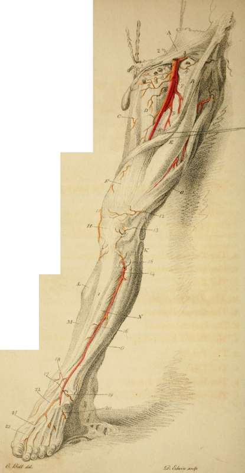

Arteries Of The Lower Extremity
Description
This section is from the book "Engravings Of The Arteries", by Charles Bell. Also available from Amazon: Engravings Of The Arteries; Illustrating The Anatomy Of The Human Body, And Serving As An Introduction To The Surgery Of The Arteries.
Arteries Of The Lower Extremity
a. The Tendon of the External Oblique Muscle.
b. The Sartorius Muscle.
c. The Gracilis.
d. The Triceps Muscle.
e. The Rectus Femoris.
f. The Vastus Interims.
g. The Vastus Extern as.
h. The Patella.
i. The Tibia.
k. The Head of the Fibula.
l. The Gastrocnemius Muscle.
m. The Soleus JWuscle.
N. The Tibialis Amicus.
o. The Extensor Tuitions of the Toes.
Arteries
1. The Femoral Artery.
2. The Epigastric Artery.*
* Epigastric Artery. This artery passes in a direction towards the Rectus Abdominis, behind the spermatic cord; it is consequently behind the neck of the sac in bubonocele Though rarely, yet sometimes it happens that the hernia comes down behind the spermatic cord, or nearer to the pubes, or even so as to split and separate the vas deferens, from the other spermatic vessels; in this case the epigastric artery lies on the inside of the sac I have seen this artery cut in the operation for hernia. Ic has been opened in the operation of Paracentesis Abdominis, and the patient lost by a haemorrage into the belly.
Very often a considerable branch of this artery courses along the edge of the Poupart ligament, towards the pubes. Its common distribution is thus:
1. To the cord and cremaster muscle.
2. Towards the back of the os pubis.
3. Principal branch ascending upon the rectus. Inosculating with the internal mammary.
3. The Beflexa Ilii.
4. A Cutaneous Branch to the head of the Sartorius, and glands, and fat.
5. To the Inguinal Glands, and Fat; it sends out a pudic branch also.
6. The External Pudic Artery*
7. The Profunda.
8. The Internal Circumflex Artery.
9. The Profunda, proceeding deep into the flesh of the thigh before it gives off the perforating branches. The Branches of the Profunda are seen in the interstices of the Rectus and Yastus Ex-ternus.+
* The largest of these External Pudic Arteries gives out its blood freely, when cut in the operation of Scrotal Hernia, or extirpation of the testicle, + They are these:
'To the Dorsum Ilii. Arteria Circumflexa J To the outside of the hip.
Externa* The greater and lesser descending-branches.
Interna.
10. The Femoral Artery, where it lies betwixt the triceps and vastus internus muscle, before it perforates the triceps.* ll,+ 12, 13. Articular Arteries, branches of the Popliteal Artery.
14. The Anterior Tibial Artery.++
* Fetnoral Artery. This artery, near the place of its perforating the triceps, is the subject of one of the most important surgical operations, for popliteal aneurism. In dissection it may be well to make this experiment: Place a string so as to reach from the superior spine of the os ilii to the prominent part of the inner condyle; mark the middle of the string; make an incision a very little towards the inside of it, in the direction of the string; first, you come to the sartorius muscle; next, laying that aside, to a fascia, which stretches from the triceps to the vastus internus; when this is slit up you may see the artery; observe its situation in regard to the vein, the ncrvus longus, and the sheath which surrounds it.
+ This branch (the first perforating branch of the Popliteal Artery) is remarkably enlarged in Popliteal Aneurism.
++ The Anterior Tibial Artery lies so under the projection of the Tibia, that it is not often wounded; yet it may be cut by a deep wound, and the student should observe how it lies under the fascia and muscles.
"The Anterior Tibial Artery comes through betwixt the "bones, one inch below the projection of the knob of the Fibu-"la; we then cut by the edge of the Peroneus Longus, and follow the partition fascia, which is betwixt this muscle and the head of the Extensor Digitorum Communis. This partition carries us deep, and we find the artery lying on the interosseous ligament."
15. The Reflected Branch of the Anterior Tibial Artery.
16. The Anterior Tibial Artery, continuing its course, and distributing small branches to the surrounding muscles.
17. At this part it passes under the Annular Ligament.
18. The Internal Maleolar Artery.
19. The External Maleolar Artery.
20. The Tarsal Artery.
21. The Anterior Tibial Artery descending on the fore part of the foot.
22. The part at which the Anterior Tibial Artery sinks into the sole of the foot, forming communications with the Plantar Arteries.
23. The last branch of the Anterior Tibial Artery, the Arteria Dorsalis Pollicis.
When the artery is to be tied lower down, after slitting up the fascia, we must cut betwixt the Tibialis Amicus, and Extensor Pollicis.
Continue to: